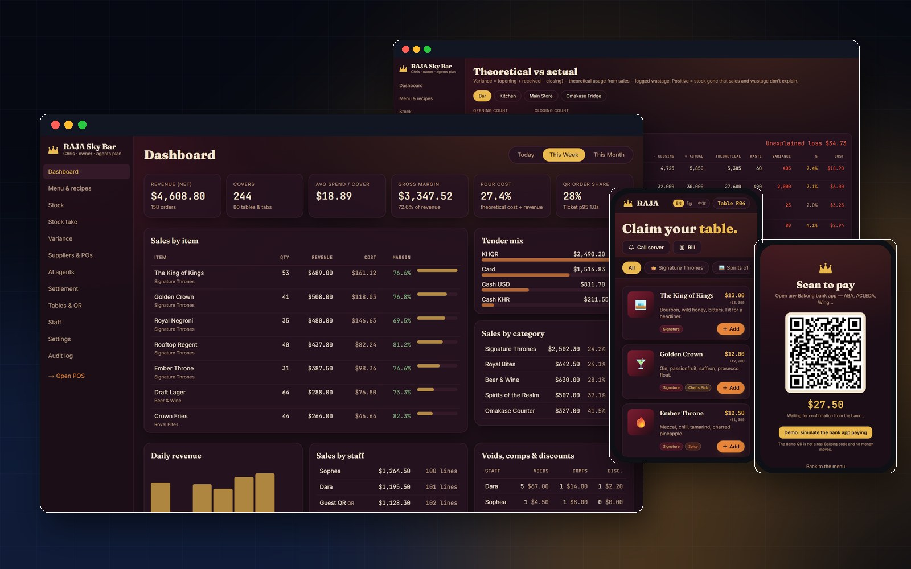
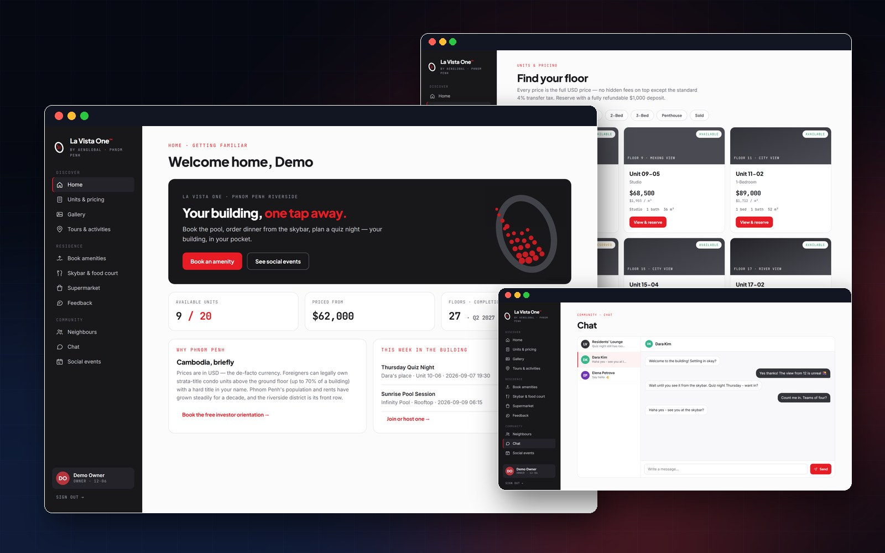
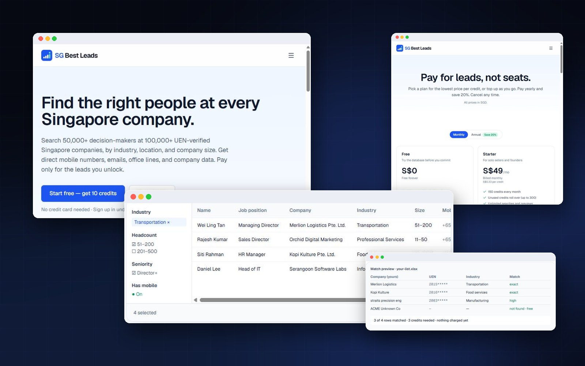
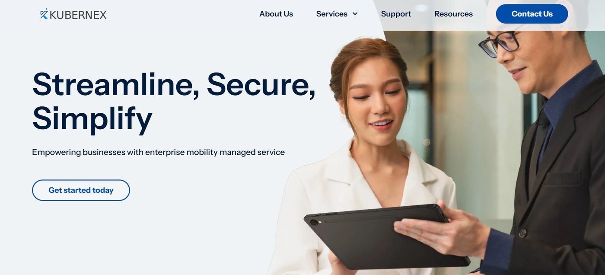
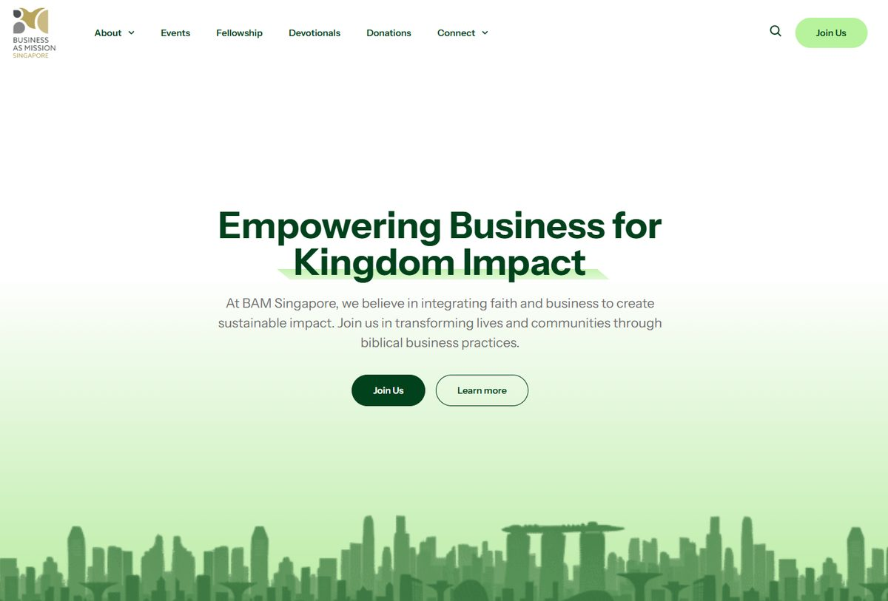
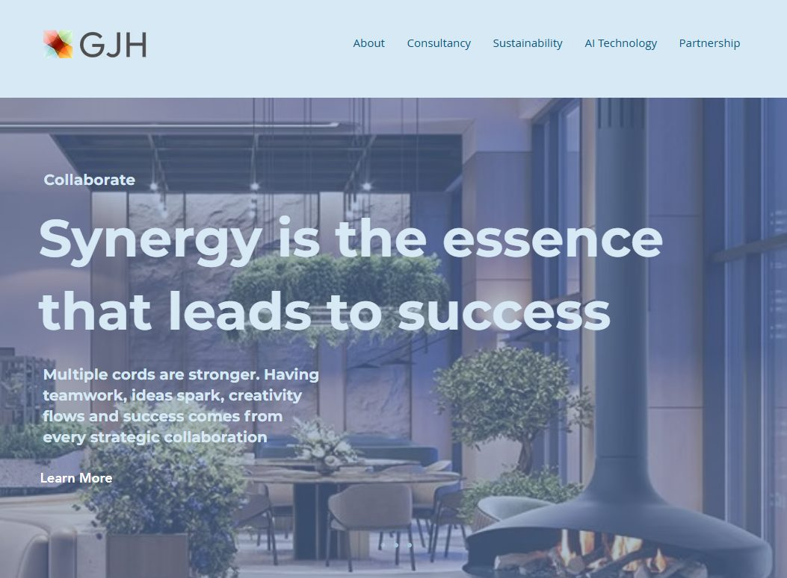
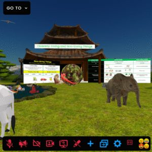
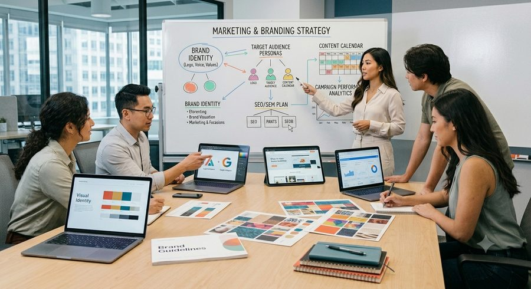

B01
Web Application Development
Full-stack web apps, portals, dashboards, admin panels, PWAs and custom e-commerce — built from scratch with full control.
◈ View in 3D →One partner that designs and engineers your software, AI, and automation in-house — then puts intelligent agents to work across marketing, sales, talent, and finance, where growth actually happens.
TSiD makes a business faster, sharper, and easier to run — by engineering the right technology in-house and applying AI where it genuinely adds value, never for show.
Delivered by our own people — not a chain of subcontractors. We stand behind our work.
Applied to real work, not bolted on for hype. If AI isn't the answer, we say so.
Build, market, sell, staff, fund, expand — without juggling a dozen vendors.
Clear scopes, clear timelines, clear pricing. Specific beats clever, every time.
Everything TSiD does sits under two connected practices. Build engineers the technology. Grow applies AI, automation, and agents to the advisory work that moves a business forward. The two feed each other.
We design and engineer software, AI, and automation in-house, on a project basis.
Advisory services delivered with AI, automation, and AI agents built in.
From a single web app to an AI agent pipeline or a full growth engine — every engagement is scoped and quoted individually. No fixed packages, no black boxes.
Full-stack web apps, portals, dashboards, admin panels, PWAs and custom e-commerce — built from scratch with full control.
◈ View in 3D →iOS, Android and cross-platform apps (React Native / Flutter) — customer-facing products and internal field tools alike.
◈ View in 3D →LangChain agents, RAG systems, workflow automation (n8n / Make / custom) and RPA that runs quietly in the background.
◈ View in 3D →From rule-based FAQ bots to AI assistants with memory — on website, WhatsApp, Telegram and Messenger, for support, lead-qual and booking.
◈ View in 3D →Full-cycle SaaS from MVP to production — multi-tenancy, subscription billing, RBAC, admin super-panels and white-label products.
◈ View in 3D →Custom CRM, HRMS, inventory, invoicing & accounting, ticketing and field-service tools — standalone or as connected modules.
Where AI genuinely adds value — roadmaps, pilots, prompt engineering and production-grade optimisation, never AI for show.
◈ View in 3D →Cloud & DevOps, system integrations, API development, legacy modernisation, cybersecurity and VAPT remediation.
◈ View in 3D →Web scraping & enrichment, data pipelines, BI dashboards, forecasting and recommendation engines — from public sources, compliantly.
◈ View in 3D →Multi-channel outreach across email, LinkedIn and WhatsApp — AI-personalised, with lead scraping, enrichment and booked meetings.
◈ View in 3D →Positioning, brand, content and campaigns — with automation and AI running the repetitive parts so the message stays consistent.
◈ View in 3D →Sourcing, screening automation and pipeline management — the right people found faster with agent-assisted workflows.
◈ View in 3D →Work-pass and relocation advisory for founders, teams and talent moving into and around the region.
◈ View in 3D →Financial advisory, forecasting and planning — supported by automated reporting and clean, real-time dashboards.
◈ View in 3D →Connecting you with the right partners, suppliers and channels — and the systems to manage those relationships as you scale.
◈ View in 3D →Programs, upskilling and digital-transformation guidance to help teams adopt the technology we build with confidence.
◈ View in 3D →No fixed packages — every engagement is scoped and quoted individually. Tell us what you need →
We talk about what changes for your business. If something's simpler than expected, we say so.
No finger-pointing, no black boxes, no ghosting. We deliver it and we stand behind it.
We translate business goals into technology — not the other way around.
Every engagement scoped and quoted individually. You always know what you're buying.
A short, honest conversation about the goal — and whether technology (or AI) is even the right answer.
Clear plan, timeline and quote. Specific deliverables, no surprises, no vague retainers.
Engineered in-house by our own team, with progress you can see and steer along the way.
Ship, measure, and layer in AI, automation and agents where they move the numbers.
Two practices and twelve services, laid out as a gallery you can explore. Walk the Build and Grow wings in your browser, take the guided tour, or step inside with a VR headset.
Built in-house with WebGL, the same way we build immersive experiences for clients.
Real demos of what we've engineered in-house — AI agents at work, automations running, platforms shipped and worlds built. Press play.
An AI agent that answers customer queries end to end — grounded in the company's own knowledge base, and escalating to a human only when it genuinely should.
Handles the day-to-day of HR — leave queries, policy questions, onboarding steps — so the HR team spends its time on people, not paperwork.
Reads invoices, categorises transactions and keeps the books current — with clean, auditable records a human accountant signs off on.
Keeps the CRM honest — logging activity, updating records and drafting follow-ups automatically, so the pipeline reflects reality.
Watches stock levels across locations, flags what's running low and prepares reorders before shortages become a problem.
Parses incoming CVs into clean, structured candidate profiles automatically — hours of manual data entry reduced to seconds per candidate.
A website chatbot that does more than greet — it answers real questions, qualifies the visitor and books the meeting while interest is warm.
An assistant with memory and context — it recalls previous conversations and handles multi-step requests naturally across a whole session.
Collects and structures product data from public sources at scale — clean, deduplicated datasets ready for pricing, catalogues or analysis.
Turns a row in a Google Sheet into a formatted, ready-to-send quotation in seconds — no copy-paste, no formatting errors, no waiting.
Macro-driven automation for spreadsheet-heavy operations — the repetitive work that used to fill afternoons now runs itself, reliably.
Matches and reconciles records across systems automatically — the tedious cross-checking that eats hours, done in a fraction of the time.

A custom POS, inventory management and dynamic pricing system for a sky bar in Cambodia. Guests order from a table QR menu in English, Khmer or Chinese and pay by KHQR; staff get live stock, recipe costing and AI agents that flag variance before it costs money.

A property management app built for three audiences at once: residents, guests and the management team. Unit listings, amenity booking, dining, a resident marketplace, events, a neighbour directory and chat all live in one place.

A self-serve B2B data SaaS. Customers search 50,000+ decision-makers at 100,000+ UEN-verified Singapore companies, unlock leads with credits, enrich their own lists, and pay by card or PayNow. sgbestleads.com →

A web platform designed and built end to end — brand, interface and engineering delivered as one coherent product.

A corporate website built for credibility — clear structure, fast loading and a presence that matches the business behind it.

A business website that works as hard as a salesperson — built to inform, reassure and convert visitors into conversations.
Our own services as a walkable 3D gallery: twelve sculpted stations, a guided tour and VR headset support, running live in the browser. Enter the pavilion →
A fully navigable 3D environment built for virtual events and brand experiences — explorable in real time from any browser.
A guided walkthrough of a custom-built virtual space — spatial design, lighting and interaction engineered in-house.
An interactive experience where visitors move, explore and engage — immersion used with purpose, not as a gimmick.
A seasonal metaverse environment built for community events — custom scenery, avatars and gathering spaces.

A branded virtual area designed from scratch — architecture and atmosphere shaped around how people actually gather in it.
Every Grow service is ordinary consultancy made faster and more consistent by AI, automation and agents working underneath it. Here's what each one actually involves.
Your pipeline shouldn't depend on whoever remembered to follow up. We build and run multi-channel outbound — email, LinkedIn and WhatsApp — where agents research each prospect, personalise every message and keep the cadence going until a meeting lands in your calendar.
✦ Agents handle the research, personalisation and chasing — your team steps in when a real conversation starts.
◈ Explore this in 3D →
Positioning first, then content that sounds like you — consistently. We define the brand, then wire automation behind it: content pipelines, scheduling and AI-assisted drafting with a human editor, so the message shows up every week without needing a big team behind it.
✦ Automation runs research, drafts, scheduling and reporting — the thinking stays human.
◈ Explore this in 3D →Hiring slows down when screening eats the week. Our agent-assisted pipeline sources candidates across channels, parses CVs into structured profiles automatically, screens against your criteria and keeps candidates warm — so your shortlist arrives ready to interview.
✦ The same CV-intake agent in our case studies runs inside this service.
◈ Explore this in 3D →Work passes and relocation, handled with the paperwork discipline they demand. We advise founders, teams and talent moving into Singapore and around the region — eligibility, documentation, timelines — with automation tracking every deadline and document so nothing slips.
✦ Deadlines, renewals and document checklists are monitored automatically — humans handle the judgement calls.
◈ Explore this in 3D →Decisions are only as good as the numbers behind them. We combine financial advisory with automated reporting — clean books, live dashboards and forecasts that update themselves — so you see the business as it is, not as it was last quarter.
✦ The accounting agent in our case studies keeps the numbers current underneath the advice.
◈ Explore this in 3D →Growth often comes down to who you're connected to. We match you with vetted partners, suppliers and channels in Singapore and the region — using enriched, scored data rather than someone's rolodex — then help you build the systems to manage those relationships as they scale.
✦ Data does the longlisting; people make the introductions.
◈ Explore this in 3D →Technology only pays off when people actually use it. We design training and upskilling programs around the systems we build — AI literacy, tool adoption, workflow training — so the change sticks long after the project ships.
✦ We train teams on the exact systems we build for them — not generic courseware.
◈ Explore this in 3D →Owners who want to digitise, automate and scale — without juggling a dozen vendors.
Tell us what you're trying to move — we'll tell you the clearest way to get there.
Guidance first — the sell follows the value. Reach us directly, or send a note and we'll come back to you.
Tell us a little about the goal. We'll reply with the clearest next step.